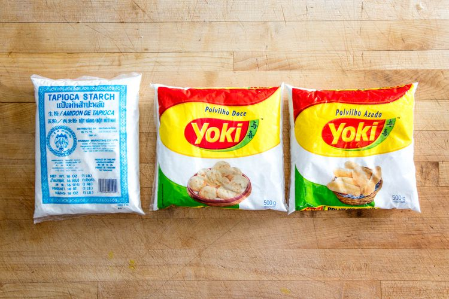
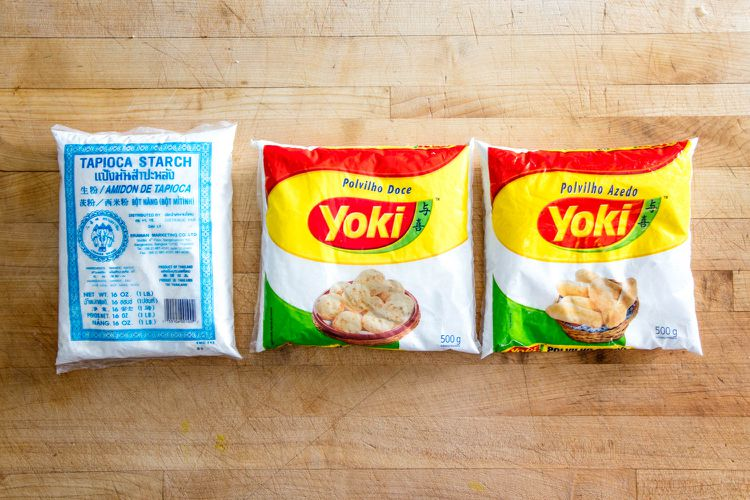

🇧🇷👩‍🍳 Brazilian Recipes You Should Try
Maria's Delicious Chicken Strogonoff
⏲️ 1h to make
Chicken strogonoff is a dish everyone loves and is super easy to prepare! The combination of juicy chicken and creamy sauce makes me salivate just thinking about it.
Created in Russia, the Brazilian version has some very particular differences. While in the country of origin the recipe is made only with beef, the sauce is much thinner, paler and made with sour cream,
ours can be made with chicken, beef or shrimp, has a thicker sauce, made with cream, and with tomato sauce or ketchup to add color and flavor to the sauce.
In addition, the Brazilian version is served with straw potatoes, to give it a crunch, or with French fries, while the Russian version.
To complete the dish, fluffy white or brown rice is perfect. How about learning how to make this delicious dish at home?

What You'll Need
- 🗠300g chicken
- 🍄‍🟫 1 cup mushrooms (triple it if you don't want to include chicken in your dish)
- 🧅 1 onion
- 🧈 1 spoon butter
- 💛 1/3 cup mustard
- 🥫 1/3 cup ketchup
- 🥛 1 cup heavy cream
- 🧄 1 garlic glove
- 🧂 salt and pepper
- optional: 🚠rice and 🥔 "batata palha" on the side
How To
- In a saucepan, combine the chicken, garlic, salt and pepper.
- In a large skillet, melt the butter, brown the onion and sautée mushrooms.
- Add the seasoned chicken until golden brown.
- Add ketchup and mustard.
- Add the heavy cream and turn off the heat before it boils.
- Serve with white rice and shoestring potatoes.
Authentic Pão de Queijo aka Cheese Puffs
⏲️ 20 min active, 24h total
Pão de queijo is a typical Brazilian snack, originally from the states Minas Gerais, where I'm from. It originated around the 18th century in the farms located in Minas Gerais, produced with local ingredients.
You can find lots of different recipes as every Brazilian has a family recipe that they swear by. I'm here to share mine!
Please note that some ingredients are not easy to find in the U.S., so this is an adapted recipe.
Pro tip: pão de queijo goes very well with a steamy cup of black coffee. A daily tradition in Brazil: having people over in the afternoon and serving them this unbeatable duo.
Pro tip n.2: you can make a big batch, and freeze them instead of cooking it all at once.
 

What You'll Need
- 🥛 2/3 cup whole milk, cold or scalded
- 🥚 2 large egg
- 🤠2 1/4 sour tapioca starch
- 🧈 2 tablespoons unsalted butter, melted
- 🧀 3 1/2 ounces sharp cheddar cheese, chopped
- 🧀 5.7 ounces Grana Padano cheese, chopped
- 🧂 2 teaspoons kosher salt
- 🧂 1 teaspoon baking powder
How To
- In a large mixing bowl, combine tapioca starch, salt, baking powder, milk, butter, and eggs. Using your hands, knead dough until thoroughly combined, about 2 minutes.
- Add chopped cheddar and Grana Padano to the dough. Knead gently to evenly distribute the cheeses while allowing some larger chunks of cheese to remain, about 2 minutes.
- Cover the tapioca dough with plastic wrap pressed directly onto the dough's surface. Refrigerate overnight to allow the starch to fully hydrate.
- Preheat the oven to 375°F (190°C) and adjust oven rack to the center position. Remove tapioca dough from refrigerator and roll into 2-inch balls using the palms of your hands. Make an indentation in the bottom of each roll using the back of a wooden spoon or your thumb.
- On a parchment-lined rimmed baking sheet, arrange the rolls leaving 1 inch of space between them. Bake until puffed and golden brown, about 20 minutes, rotating the pan once during baking. Alternatively, freeze the rolls on the sheet tray until hard, then transfer to a zipper-lock bag to store in the freezer. Bake from frozen as directed above.
🗣️ Thanks for visiting and don't forget to share with me when you recreate one of the recipes!